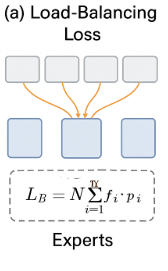

Mixture of Experts (MoE): A Deep Dive into the Architecture Powering the Next Wave of LLMs
The world of Large Language Models (LLMs) is in a constant state of evolution. We're witnessing a rapid increase in model size, with parameter counts reaching into the trillions. However, training and running these massive "dense" models, where every parameter is used for every input, is becoming increasingly unsustainable. Enter the Mixture of Experts (MoE) architecture, a paradigm shift that promises to deliver the power of enormous models with a fraction of the computational cost.
In this deep dive, we'll explore the ins and outs of MoEs, from their fundamental architecture to the latest cutting-edge techniques used in models like DeepSeek and Mixtral. We'll be drawing on insights from a recent lecture on MoEs and the excellent Hugging Face blog post on the topic to provide a comprehensive technical overview.
🔗 Open in Colab - Try the Mixture of Experts demo notebook
What is a Mixture of Experts (MoE)?
At its core, an MoE is a neural network architecture that employs a "divide and conquer" strategy. Instead of a single, monolithic model that processes all data, an MoE is comprised of numerous smaller, specialized sub-networks called "experts". For any given input, a "gating network" or "router" dynamically selects which experts are best suited to handle the task.
In the context of Transformer models, which form the backbone of most modern LLMs, MoE layers are used to replace the dense feed-forward network (FFN) layers. While the other components of the Transformer (like the self-attention mechanism) remain shared, the FFNs are split into multiple experts. This means that for any given token, only a fraction of the model's total parameters are activated, leading to a significant reduction in computational cost.

This sparse activation is the key to the efficiency of MoEs. It allows for the creation of models with a massive number of parameters, but with a computational cost (measured in FLOPs) that's comparable to a much smaller dense model.
Why are MoEs Gaining Popularity?
The resurgence of MoEs in the LLM space can be attributed to a few key advantages:
- Faster Training: MoEs can be trained significantly faster than their dense counterparts. For a given computational budget, you can either train a larger MoE model or train a model on a larger dataset. The charts below from the OIMOE paper show a 7x speedup in training time to reach the same performance as a dense model.
- Better Performance for the Same FLOPs: With the same amount of computation, a sparse MoE model can achieve better performance than a dense model. This is because the MoE can have a much larger number of parameters, allowing it to learn a wider range of features and specialize its experts for different tasks. The graph below shows the relationship between sparse model parameters and test loss, demonstrating that as the number of experts increases (and thus the total number of parameters), the test loss decreases.
- Highly Competitive Performance: As a result of the above, MoEs have become highly competitive with, and in some cases, have surpassed the performance of the best dense models. The chart below shows the performance of various models on the MMLU benchmark, with many of the top performers being MoE models.
- Parallelizability: The MoE architecture is inherently parallelizable. Each expert can be placed on a different device (GPU/TPU), allowing for efficient scaling to large clusters of machines. This "expert parallelism" is a key enabler for training massive MoE models.
How are Tokens Routed to Experts? The Math Behind Top-K
The magic of MoEs lies in the routing mechanism. The router is responsible for deciding which expert(s) each token should be sent to. The most common approach is "Top-K" routing", where the router selects the top 'k' experts with the highest scores for a given token.

Let's break down the math of Top-K routing as presented on page 19 of the lecture notes. For a given input token embedding \(u_t^l\) at layer \(l\), the process is as follows:
- Calculate Expert Scores: A learnable weight matrix \(e_i^l\) (one for each expert \(i\)) is used to compute a score, \(s_{i,t}\), for each expert. This score represents the affinity of the token for that expert. The scores for all experts are then typically normalized using a Softmax function. \[s_{i,t}=\text{Softmax}_{i}(u_{t}^{lT}e_{i}^{l})\]
- Select Top-K Experts: The router selects the \(K\) experts with the highest scores. The gating value \(g_{i,t}\) is set to the expert's score \(s_{i,t}\) if it's in the top K, and zero otherwise. \[g_{i,t}=\begin{cases}s_{i,t},& \text{if } s_{i,t} \in \text{TopK}(\{s_{j,t}|1\le j\le N\},K) \\ 0, & \text{otherwise} \end{cases}\] Note: Some modern models like Mixtral and DeepSeek v3 apply a second Softmax to the gating values after the Top-K selection to re-normalize the weights among the chosen experts.
- Compute Final Output: The output of the MoE layer, \(h_t^l\), is a weighted sum of the outputs of the selected experts, combined with the original input via a residual connection. \[h_{t}^{l}=\sum_{i=1}^{N}(g_{i,t} \cdot \text{FFN}_{i}(u_{t}^{l}))+u_{t}^{l}\]
Most modern MoEs use k=2 or k=4. For example, Mixtral uses Top-2 routing, while DBRX uses Top-4.
The Challenges of Training MoEs
Despite their advantages, MoEs are not without their challenges. The discrete nature of the routing decision (a token is either sent to an expert or it's not) makes it non-differentiable, which is a problem for gradient-based optimization. The community has largely settled on using heuristic losses to guide the training process.
Load Balancing Loss
A major challenge in training MoEs is ensuring that all experts are utilized equally. If the router consistently favors a few experts, the others will not be trained effectively, leading to wasted capacity. To combat this, an auxiliary "load balancing" loss is added to the main training objective.
The formulation used in the Switch Transformer is a popular choice. The loss is the scaled dot-product between the fraction of tokens dispatched to each expert (\(f_i\)) and the fraction of the router's probability mass allocated to each expert (\(P_i\)).
\[\text{loss}_{\text{aux}}=\alpha \cdot N \cdot\sum_{i=1}^{N}f_{i}\cdot P_{i}\]Where:
- \(N\) is the number of experts.
- \(\alpha\) is a hyperparameter to scale the loss.
- \(f_{i}\) is the fraction of tokens in a batch dispatched to expert \(i\): \(f_{i}=\frac{1}{T}\sum_{x\in\mathcal{B}}\mathbb{I}\{\text{argmax } p(x)=i\}\).
- \(P_{i}\) is the average router probability for expert \(i\) over the batch: \(P_{i}=\frac{1}{T}\sum_{x\in\mathcal{B}}p_{i}(x)\).
This loss encourages the router to distribute tokens evenly across all available experts, as shown in the figure below.

Training Stability and Z-loss
MoEs can be prone to training instability, partly due to the use of lower-precision formats like bfloat16. The Softmax function in the router can be sensitive to small precision errors, especially with large logit values, which can lead to unstable training.
To improve stability, a "z-loss" can be added to the training objective. This loss penalizes the squared log of the sum of the exponentials of the router logits, which helps keep the logits small and manageable.
\[L_{z}(x)=\frac{1}{B}\sum_{i=1}^{B}(\log\sum_{j=1}^{N}e^{x_{j}})^{2}\]This simple addition can have a dramatic effect on stabilizing training and improving performance, as shown in the ablation studies below.
The Frontier of MoE Research: A Look at DeepSeek
The field of MoEs is rapidly advancing, with new architectures and techniques being developed all the time. The DeepSeek family of models, in particular, has introduced several interesting innovations across its versions.
- DeepSeek v1/v2: These versions introduced the concepts of shared experts (a few FFNs that process every token) and fine-grained experts (many small, specialized FFNs). The final output is a combination of the input token, the output from the shared experts, and the weighted output from the routed experts. They also used a standard auxiliary loss for expert and device-level balancing.
- DeepSeek v3: The latest version introduces a few key changes to the routing mechanism:
- Sigmoid Gating: Instead of Softmax, it uses a Sigmoid function to calculate the initial expert scores: \(s_{i,t}= \text{Sigmoid}(u_{t}^{T}e_{i})\).
- Aux-loss-free Balancing: It largely replaces the auxiliary loss with a learnable bias term, \(b_i\), for each expert. This bias is adjusted during training to balance the token load, making it more likely for underutilized experts to be selected. \[g_{i,t}^{\prime}=\begin{cases}s_{i,t},& \text{if } s_{i,t}+b_{i} \in \text{TopK}(\{s_{j,t}+b_{j}|1\le j\le N_{r}\},K_{r}) \\ 0, & \text{otherwise} \end{cases}\]
- Softmax after Top-K: The gating values for the selected experts are re-normalized with a Softmax function before being used to weight the expert outputs.
Conclusion
Mixture of Experts models represent a major step forward in the quest for more efficient and powerful LLMs. By embracing sparsity, MoEs are able to achieve the performance of massive dense models with a fraction of the computational cost. While they come with their own set of challenges, particularly in the areas of routing, training stability, and fine-tuning, the research community is rapidly developing innovative solutions to these problems. As we continue to push the boundaries of what's possible with LLMs, it's clear that MoEs will play a crucial role in shaping the future of artificial intelligence.